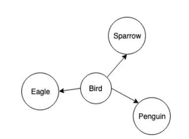
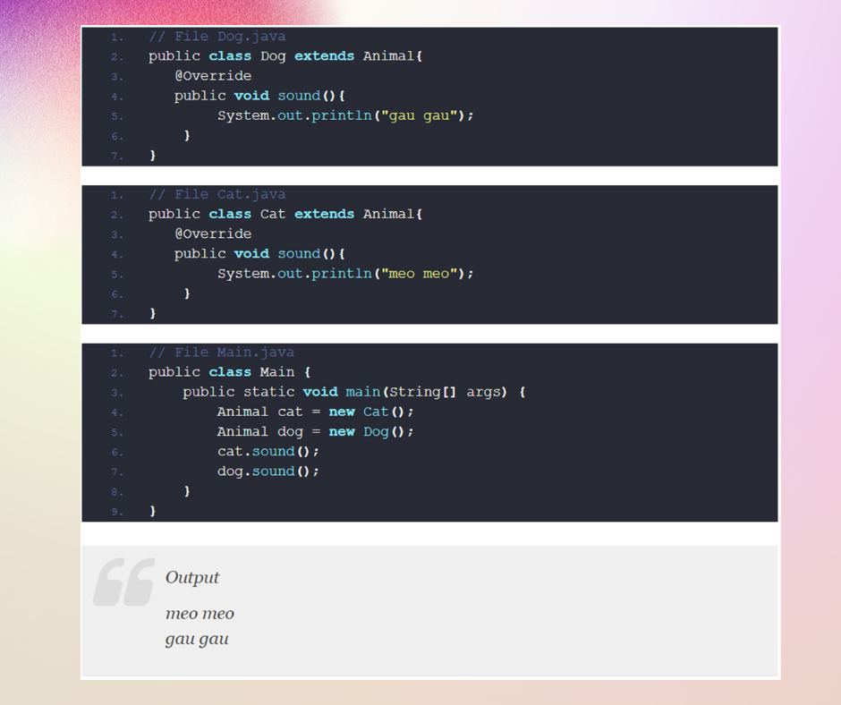
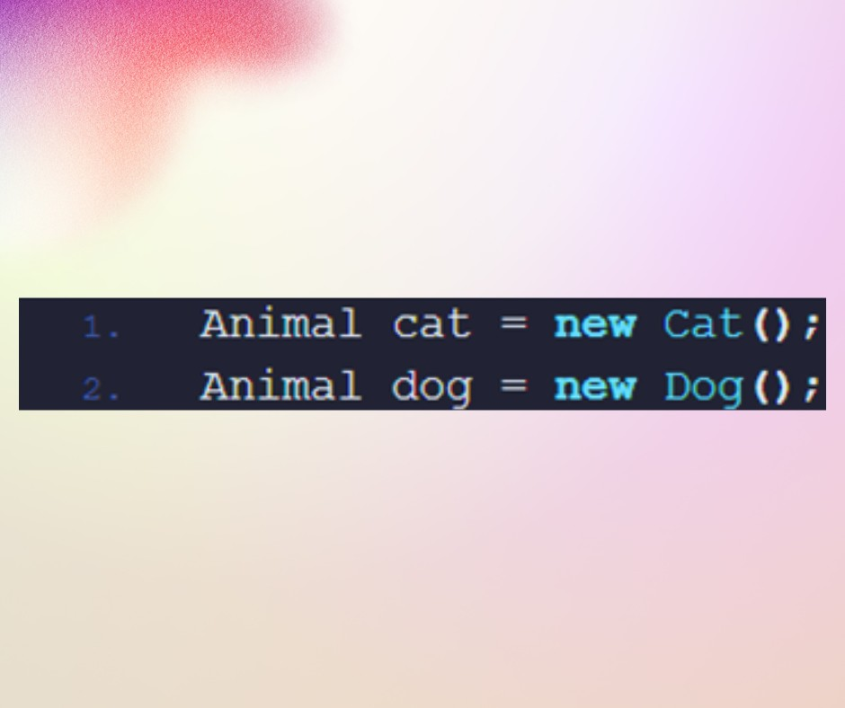

Polymorphism (Part 2)
🔰Tiếp nối bài viết về tính đa hình trong oop đầu tiên thì sau đây mình sẽ giới thiệu các bạn về tính đa hình trong java
🧑💻 Tính Đa hình(Polymorphism) trong java là gì?
Mục đích sử dụng của tính Đa hình trong Java?
📍 Đa hình là một khái niệm quan trọng trong lập trình hướng đối tượng. Cho phép chúng ta thực một hành động theo nhiều cách khác khác nhau.
Các keyword bạn cần để ý khi học tính đa hình:
• Upcasting
• Downcasting
• Overloading
• Overriding
📍 Ý nghĩa của đa hình trong lập trình hướng đối tượng Java:
Đa hình cho phép khởi tạo các class con dựa trên base class. Tại thời điểm run tine, trình biên dịch sẽ dựa vào lúc chúng ta khởi tạo mà tự nhận diện được class con
📍 Phần sau mình sẽ nói về Cơ chế upcasting và downcasting trong java.
📍Ví dụ: Chúng ta có class Animal có method sound(), class Animal là base class cho tất cả các loài động, ví dụ như Cat thì nó sẽ kêu là meo meo Dog kêu là gau gau.

Chúng ta sẽ tiến hành định nghĩa base class Animal
📍Tiếp theo là 2 class Dog và Cat thừa kế từ class Animal.
📍Các bạn để ý đoạn code ở Main
📍Animal mà new Cat(), new Dog(). Animal là một base class, Dog và Cat đều extends từ Animal. Hiểu nôm na là Dog và Cat là 2 biểu hiện khác nhau nhưng đều cùng loại là Animal.
Cho nên đoạn code trên là hoàn toàn đúng, và nó có ý nghĩa rất lớn trong lập trình hướng đối tượng mà chúng ta sẽ nói ở phần cuối.
📍Như các bạn thấy ở trên, mỗi class con Dog và Cat đều đã định nghĩa là sound() riêng của nó. Như vậy class Animal sẽ có nhiệm vụ cung cấp một cấu trúc chung là tất cả các class con, các class con có thể sử dụng lại hoặc implement theo cách riêng tuỳ vào các đặc tính của nó. Ví dụ mèo thì phải kêu meo meo, chó thì kêu gau gau.